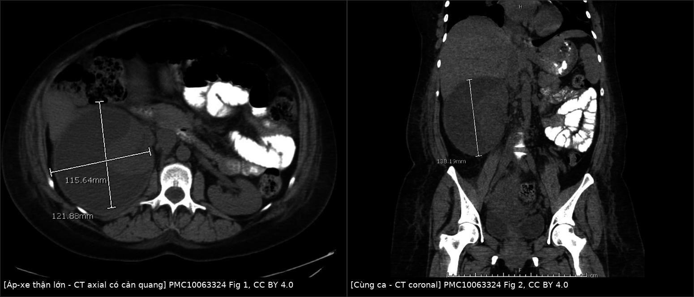
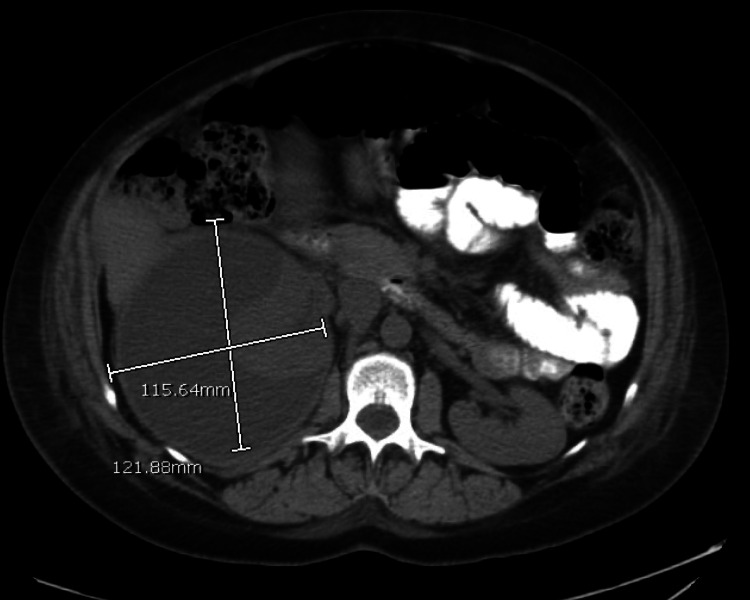
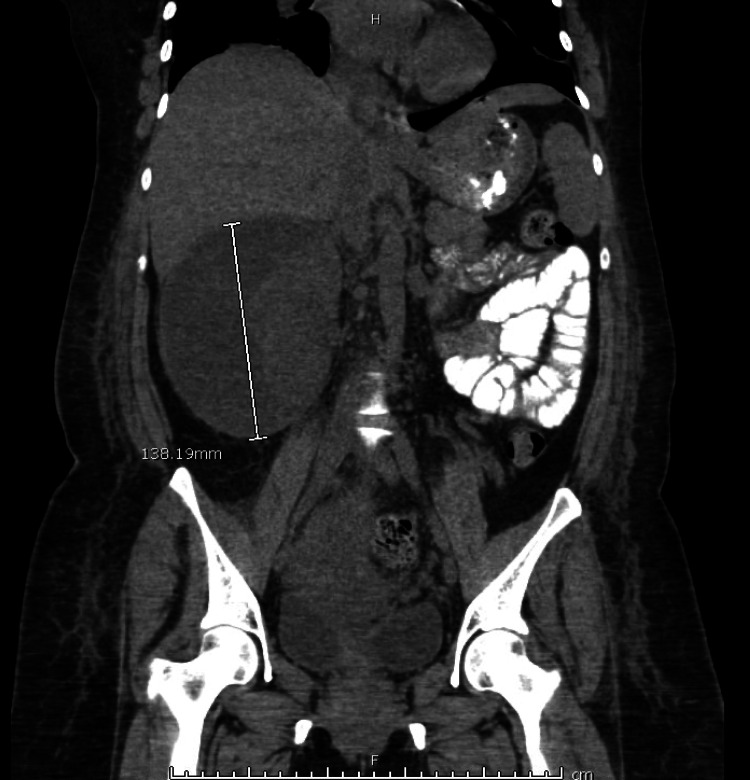
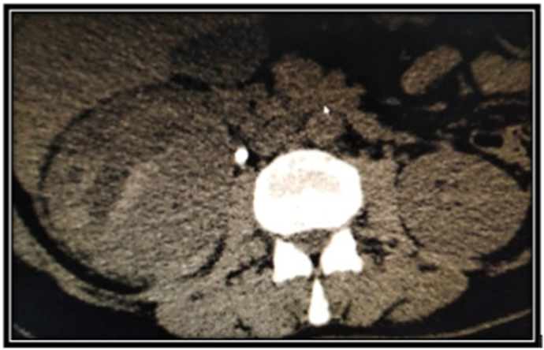
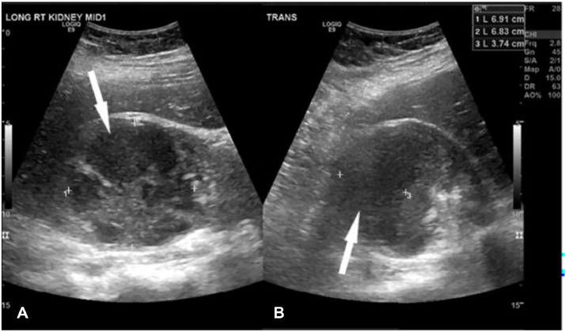
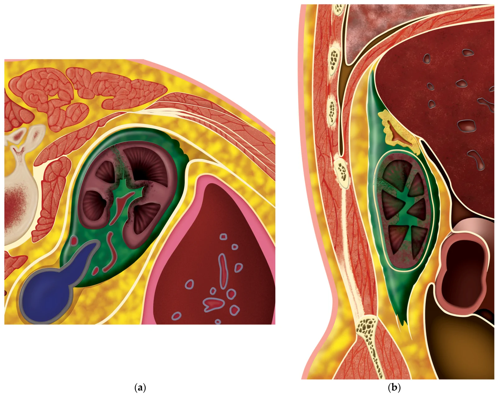

1923 — Áp-xe thận & áp-xe quanh thận ở thai phụ: "ổ dịch có viền" sau viêm thận–bể thận, ngưỡng dẫn lưu và cạm bẫy sau sinh / Renal and perinephric abscess in pregnancy
Tags: pattern:o-dich pattern:viem pattern:khi vung:than vung:thai-nhi vung:o-bung protocol:sieu-am-bung protocol:MRI-khong-can-tu protocol:CT-lieu-thap score:Huang-Tseng
Mức chắc chắn (certainty): tổng hợp y văn (literature synthesis) — ghép 4 ca nguyên văn có ảnh (PMC10063324, PMC9207609, PMC11403430, PMC11693407), 1 đoàn hệ người lớn 2.192 ca (PMC3752624), 1 tổng quan về ứ mủ thận (PMC13703377) và 1 tổng quan áp-xe cơ thắt lưng–chậu ở thai (PMC10867082). Phần ngưỡng dẫn lưu 3 cm là quy ước thực hành, không phải ngưỡng từ thử nghiệm ngẫu nhiên — ghi rõ "chưa rõ" ở chỗ nguồn không đủ.
Câu chốt: Áp-xe thận ở thai không phải bệnh của một triệu chứng mà là biến chứng của viêm thận–bể thận không đáp ứng. Chốt hình ảnh là ổ dịch trung tâm không ngấm + viền ngấm dày + dải mỡ quanh thận (khí = −1000 HU là thể sinh khí, tiên lượng khác). Chốt xử trí là kích thước + đáp ứng 48–72 giờ + có sốc/khí/tắc, không phải con số bạch cầu: trong loạt 2.192 ca người lớn, 74,8% chỉ dùng kháng sinh, 14,6% dẫn lưu qua da, tử vong nội viện 2,6% (PMC3752624). Ở thai, ca lớn nhất trong y văn có ảnh là 13,8 × 12,2 × 11,6 cm, hút ra 730 mL mủ, và bệnh nhân chỉ được chẩn đoán sau sinh (PMC10063324).
1. Tổng quan bệnh học – cơ chế hình ảnh
1.1 Từ viêm thận–bể thận đến ổ mủ (TẠI SAO)
- Viêm thận–bể thận cấp (acute pyelonephritis, APN) xảy ra ở 1–2% thai kỳ, hay gặp quý II, thận phải nhiều hơn vì tử cung xoay sang phải; nhiễm khuẩn niệu không triệu chứng (asymptomatic bacteriuria) có ở ~3% thai và là bước đệm (PMC9207609). Tái phát APN trong thai tới 20–25% (PMC11693407).
- Cơ chế ổ mủ: vi khuẩn đường niệu đi ngược dòng → viêm ống thận và kẽ → phù + mủ chèn ép ống thận (tạo striated nephrogram) → vùng hoại tử–mủ khu trú không có mao mạch → ổ dịch trung tâm, xung quanh là tổ chức hạt + vỏ xơ có mao mạch → viền ngấm thuốc. Khi mủ phá vỡ vỏ thận → áp-xe quanh thận (perinephric abscess); lan ra cơ thắt lưng–chậu → áp-xe cơ chậu (psoas abscess).
- Vì sao thai dễ hơn: progesterone làm giãn cơ trơn niệu quản, giảm nhu động; tử cung chèn ép; ứ nước sinh lý từ quý II (đỉnh 24–28 tuần); thêm đái tháo đường thai kỳ, thiếu máu, táo bón — tất cả làm ứ trệ và tăng nguy cơ nhiễm mô. Trong loạt 66 thai phụ nhiễm khuẩn niệu trên có urosepsis, thiếu máu 69,7% vs 50,0% và ứ nước độ 2–3 81,8% vs 52,8% so với không sepsis (PMC10673142).
- Tần suất áp-xe thận ở thai: chưa được xác lập; y văn chủ yếu là ca lẻ, và ca lớn nhất được phát hiện ngay sau sinh (PMC10063324). Đây là lý do không được dùng "hiếm" để loại trừ.
1.2 Vì sao hình ảnh trông như vậy (vật lý từng phương thức)
- Siêu âm (US): mủ là dịch có hồi âm lấm tấm (tế bào, protein, mảnh tổ chức) — khác nang đơn thuần trong, không hồi âm; thành dày, bờ không đều; tăng âm phía sau vì dịch dẫn âm tốt hơn mô; không có tín hiệu Doppler trong trung tâm hoại tử. Khí trong ổ cho điểm tăng âm + bóng bẩn (dirty shadowing) — khác sỏi cho bóng lưng sạch.
- CT: nước tiểu trong 0–10 HU; mủ đặc hơn nhờ tế bào và protein nên thường 10–30 HU (các loạt ứ mủ thận báo trung bình ~10–20 HU, nhưng ngưỡng thay đổi theo protocol, không có cut-off chung — PMC13703377). Trung tâm ổ không ngấm, viền ngấm ở thì nephrographic 80–100 giây; dải mỡ quanh thận (perinephric stranding) và dày cân thận là dấu hiệu viêm lan. Khí = −1000 HU; mỡ quanh thận = −40 đến −120 HU — đừng nhầm.
- MRI: mủ T1 thấp, T2 cao, nhưng đặc và nhớt nên khuếch tán hạn chế: DWI sáng, ADC thấp — đây là chỗ phân biệt với nang đơn thuần/ứ nước (dịch tự do khuếch tán mạnh, ADC cao). Với thai, MRI không cản từ (HASTE/SSFSE + DWI) là lựa chọn ưu tiên sau siêu âm.
- Vì sao "viền" không đồng nghĩa ác tính: viền là tổ chức hạt quanh ổ hoại tử, không phải vỏ u; bờ đều, mảnh ở ổ viêm cấp; u hoại tử thường bờ trong gồ ghề, thành dày lệch tâm và có phần đặc ngấm thuốc.
1.3 Ngưỡng định lượng nằm lòng
| Chỉ số | Con số | Nguồn |
|---|---|---|
| APN ở thai | 1–2% thai kỳ; tái phát 20–25% | PMC9207609, PMC11693407 |
| Nhiễm khuẩn niệu không triệu chứng | ~3% thai (riêng ASB 2–10% — xem bài 1921) | PMC9207609 |
| Áp-xe thận ở thai | chưa có tỉ lệ; y văn chủ yếu ca lẻ | PMC10063324 |
| Loạt người lớn 2.192 ca | tử vong nội viện 2,6% (ĐTĐ 2,3% vs không ĐTĐ 3,4%); nằm viện 18,9 vs 16,2 ngày | PMC3752624 |
| Điều trị trong loạt trên | kháng sinh đơn thuần 74,8%; dẫn lưu qua da 14,6%; mổ dẫn lưu 6,3%; cắt thận 4,3% | PMC3752624 |
| Tử vong theo phương thức | 1,1–3,8%, không khác biệt có ý nghĩa | PMC3752624 |
| Ngưỡng "nhỏ" | < 3 cm + bệnh nhân ổn định: có thể chỉ kháng sinh | PMC3752624 (dẫn lại), PMC12066547 (nhi) |
| Ca áp-xe thận lớn nhất có ảnh | 13,8 × 12,2 × 11,6 cm; 730 mL dịch đục; 46.840 WBC/mm³ | PMC10063324 |
| Ca áp-xe quanh thận | 7 cm, CRP 284 mg/L, creatinin 212 µmol/L, cấy nước tiểu âm | PMC9207609 |
| Viêm túi thừa đài thận nhiễm trùng | 6,9 × 6,8 × 3,7 cm, dẫn lưu ở 16 tuần, sinh 3.379 g ở 40 tuần | PMC11403430 |
| Ứ mủ thận (pyonephrosis) | không giải áp: tử vong 19,2% vs 8,82%; trễ ≥ 2 ngày aOR 1,29 | PMC12693273 |
| Viêm thận sinh khí (EPN) | tử vong ~25%; 95% có ĐTĐ; 25–75% có tắc nghẽn | PMC11693407 |
| Áp-xe cơ chậu ở thai | < 12 ca trong y văn; xuất hiện 13–39 tuần; sốt vắng mặt ở hơn một nửa | PMC10867082 |
2. Mẫu hình + chẩn đoán phân biệt theo vị trí (gamut)
Bốn mẫu hình theo vị trí quyết định gamut:
- A. Ổ dịch trong nhu mô thận: áp-xe thận · viêm thận–bể thận thể nốt (acute lobar nephronia — chưa có ổ dịch thật) · nang thận nhiễm trùng · u thận hoại tử (RCC, lymphoma) · máu tụ trong nang/ADPKD · ổ hoại tử trong XGP.
- B. Ổ dịch quanh thận: áp-xe quanh thận · nước tiểu thoát (urinoma) sau chấn thương/tắc · máu tụ dưới bao · lymphocele sau mổ/ghép · áp-xe cơ thắt lưng–chậu.
- C. Ổ dịch trong hệ đài–bể thận: ứ mủ thận (pyonephrosis) · viêm túi thừa đài thận nhiễm trùng · ứ nước đơn thuần · viêm thận sinh khí (EPN) khi có khí trong nhu mô.
- D. Bắt chước sau sinh: viêm nội mạc tử cung · huyết khối tĩnh mạch buồng trứng (POVT) · áp-xe vùng chậu · tụ máu thành bụng · bệnh cảnh "sốt sau sinh" — mọi ca sốt sau sinh kèm đau hông phải được coi là áp-xe thận cho tới khi loại trừ.
Gợi nhớ: "MỦ – NƯỚC – MÁU – KHÍ" — nhìn đậm độ/HU trước, rồi mới hỏi vị trí; khí ở đâu quyết định tên gọi và tiên lượng (đài–bể = ứ mủ; nhu mô = EPN; quanh thận = độ 3 trở lên).
3. Bảng so sánh phân biệt (ma trận đối chiếu)
| Thực thể (entity) | Hình ảnh điển hình | Chốt vào (rule-in) | Chốt loại (rule-out) | Gợi ý xác nhận |
|---|---|---|---|---|
| Áp-xe thận | Ổ dịch trung tâm không ngấm, viền ngấm (dày/không đều tùy giai đoạn), dải mỡ quanh thận; có thể có khí | Viền ngấm + trung tâm 10–30 HU + sốt > 72 giờ dù kháng sinh | Nang thành mảnh, dịch 0–10 HU, không viền, không dải mỡ → nang đơn thuần | CT có cản quang thì nephrographic; US dẫn lưu; cấy mủ |
| Áp-xe quanh thận | Ổ dịch ngoài vỏ thận, đẩy thận, dày cân thận; có thể lan cơ chậu | Ổ dịch ngoài nhu mô + mất mặt phẳng mỡ quanh thận | Dịch trong bao thận, thành mảnh, không viêm → nang/nước tiểu | CT/MRI; đo creatinin dịch (urinoma rất cao) |
| Ứ mủ thận (pyonephrosis) | Đài–bể thận giãn chứa dịch đặc, mảnh vụn lơ lửng, thành dày; thận to | Dịch đài–bể đậm độ cao + mảnh vụn + tắc nghẽn | Dịch trong, không mảnh vụn, không viêm → ứ nước đơn thuần | US/CT; cấy dịch qua chọc hút hoặc lúc dẫn lưu; giải áp sớm |
| Viêm túi thừa đài thận | Ổ dịch thông với đài thận qua cổ hẹp; bờ nhẵn; có thể có sỏi trong túi | Thấy cổ thông trên MRI/CT thì muộn | Không thấy đường thông + viền dày → áp-xe | MRI T2/CT muộn; theo dõi sau dẫn lưu |
| Viêm thận sinh khí (EPN) | Khí trong nhu mô (HU ≈ −1000), phá hủy nhu mô, có thể lan quanh thận | Khí trong NHU MÔ trên CT không cản quang | Khí chỉ trong đài–bể → ứ mủ (nhẹ hơn) | CT + phân độ Huang–Tseng; kiểm soát đường huyết |
| Urinoma | Ổ dịch nước tiểu, thành mảnh, không viền ngấm, thường sau tắc/chấn thương | Creatinin dịch ≈ creatinin máu (rất cao) | Viền ngấm + sốt + dải mỡ → áp-xe | CT muộn (rò cản quang); đo creatinin dịch |
| Máu tụ quanh thận | Đậm độ 50–80 HU (máu cấp), không viền, hình liềm/dưới bao | Không viền + đậm độ máu + tiền sử chấn thương/đẻ | Viền ngấm + khí → áp-xe | CT không cản quang; theo dõi Hb |
| Áp-xe cơ chậu | Ổ dịch trong cơ thắt lưng–chậu, mất mặt phẳng cơ, lan dưới dây chằng bẹn | Đau lưng + đi khập khiễng + sốt (nhưng sốt có thể vắng) | Ổ dịch trong thận → áp-xe thận | CT/MRI; dẫn lưu dưới siêu âm |

Trái: CT axial có cản quang — ổ dịch lớn thận phải, đo 121,9 × 115,6 mm, viền mỏng, đẩy nhu mô. Phải: mặt phẳng coronal cùng ca, chiều dài 158,2 mm. Nguồn: PMC10063324, Figs. 1–2, CC BY 4.0; ghép bằngtools/make_composite.py (letterbox, không crop).
3.1 Vì sao phải đo cả hai bình diện
Ổ mủ không phải hình cầu hoàn hảo: ca trên có 121,9 × 115,6 mm trên axial nhưng 158,2 mm trên coronal — nếu chỉ đo một mặt cắt sẽ đánh giá thấp thể tích và có thể chọn dẫn lưu không đủ. Với ổ > 5 cm, nên dùng catheter 10–14 F thay vì kim hút đơn thuần vì mủ đặc dễ tắc.
3.2 "Viền ngấm" của áp-xe khác "cortical rim sign" của nhồi máu
Nhồi máu thận cho nêm giảm đậm độ bờ rất sắc + viền vỏ mảnh còn ngấm do tuần hoàn vỏ còn nguyên; áp-xe cho viền dày, không đều, kèm dải mỡ và sốt. Đây là cặp dễ nhầm nhất trên CT có cản quang, và là lý do không đọc CT viêm thận mà bỏ qua bối cảnh lâm sàng.
4. Protocol chụp + hệ phân độ/điểm chuẩn hóa
4.1 Trình tự hình ảnh ở thai phụ/sau sinh nghi áp-xe
- Siêu âm bụng–thận–niệu quản + Doppler (không tia): xác định ổ dịch, thành, mảnh vụn, khí, ứ nước, sỏi. Siêu âm là bước đầu tiên vì nhanh, không tia, và đủ để quyết định có ổ dịch cần dẫn lưu.
- MRI không cản từ (HASTE/SSFSE, T2 fat-sat, DWI/ADC) khi siêu âm không kết luận hoặc cần phân biệt áp-xe – túi thừa đài thận – u hoại tử: mủ DWI sáng/ADC thấp, túi thừa thấy cổ thông, u có phần đặc ngấm.
- CT liều thấp khi cần khí, sỏi cản quang, mức lan quanh thận hoặc trước dẫn lưu: không cản quang nếu tìm khí/sỏi; có cản quang thì nephrographic 80–100 giây nếu cần thấy viền/ổ. ACOG: nguy cơ thai nhi dưới 50 mGy là rất thấp, không một khảo sát đơn lẻ nào vượt 100 mGy, nhưng vẫn ALARA.
- Chọc hút/dẫn lưu dưới hướng dẫn hình ảnh vừa là điều trị vừa là lấy mẫu vi sinh — không chọc hút chỉ để "xem dịch trong hay đục" khi đã có chỉ định dẫn lưu.
- Siêu âm/CT kiểm tra sau 5–7 ngày (hoặc sớm hơn nếu sốt tiếp diễn) — không chụp lại mỗi ngày.
4.2 Ngưỡng và kỹ thuật dẫn lưu (quy ước thực hành, không phải RCT)
| Tình huống | Xử trí | Căn cứ |
|---|---|---|
| Ổ < 3 cm, bệnh nhân ổn định, không khí, không tắc | Kháng sinh IV + theo dõi 48–72 giờ; dẫn lưu nếu không đỡ | Loạt người lớn: ổ nhỏ < 3 cm có thể chỉ kháng sinh (PMC3752624); loạt nhi: 100% ổ < 3 cm khỏi với kháng sinh (PMC12066547) |
| Ổ ≥ 3 cm | Dẫn lưu qua da + kháng sinh | Quy ước thực hành; chưa có RCT xác định ngưỡng ở thai |
| Sốc nhiễm khuẩn, khí trong nhu mô, tắc nghẽn, không đỡ sau 48–72 giờ | Dẫn lưu ngay (không chờ đủ 3 cm) | Ứ mủ không giải áp: tử vong 19,2% vs 8,82% (PMC12693273) |
| Áp-xe quanh thận/cơ chậu | Dẫn lưu theo đường ngắn nhất, tránh đại tràng/màng phổi; có thể lumbar hoặc transpsoas | Ca 7 cm và 20 × 10 cm đều dẫn lưu thành công (PMC9207609, PMC10867082) |
| Sau dẫn lưu | Kháng sinh 14 ngày (áp-xe thận) đến 4 tuần (quanh thận) tùy đáp ứng; cấy mủ để xuống thang | Ca 13,8 cm: ceftriaxone 14 ngày; ca quanh thận: 4 tuần (PMC10063324, PMC9207609) |
- Chọn catheter: ổ lớn/mủ đặc dùng 10–14 F; ca 13,8 cm dùng 10 F, hút 730 mL ngay lần đầu (PMC10063324). Không bơm rửa mạnh vì có thể làm mủ lan vào máu.
- Cấy mủ là bắt buộc vì cấy nước tiểu có thể âm (ca quanh thận 7 cm: cấy nước tiểu âm, cấy mủ ra E. coli) (PMC9207609).
- EPN — phân độ Huang–Tseng (dùng để chọn can thiệp): độ 1 khí chỉ trong đài–bể; độ 2 trong nhu mô; 3A lan quanh thận; 3B lan cạnh thận/tạng lân cận; 4 hai bên hoặc thận độc nhất. Ca EPN ở thai 30 tuần trong bài 1924 là Huang II và khỏi với kháng sinh đơn thuần (PMC11693407) — không phải mọi EPN đều phải mổ.
4.3 Sơ đồ quyết định (Mermaid)
flowchart TD
A[Thai phụ hoặc sau sinh: sốt, đau hông, đã dùng kháng sinh 48-72 giờ không đỡ] --> B[Siêu âm thận + Doppler]
B --> C{Có ổ dịch, khí, thận to?}
C -->|Không rõ| D[MRI không cản từ hoặc CT liều thấp]
C -->|Có| E[Đo kích thước 2 bình diện, tìm viền, khí, lan quanh thận]
D --> E
E --> F{≥ 3 cm hoặc sốc hoặc khí hoặc tắc?}
F -->|Có| G[Dẫn lưu qua da + cấy mủ + kháng sinh IV]
F -->|Không| H[Kháng sinh IV, theo dõi 48-72 giờ]
H -->|Xấu đi hoặc sốt tiếp diễn| G
G --> I[Kháng sinh 14 ngày đến 4 tuần theo ổ và đáp ứng]
I --> J[Siêu âm/CT kiểm tra sau 5-7 ngày]
5. Biến thể bình thường và cạm bẫy
- Cạm bẫy 1 — "sốt sau sinh là viêm nội mạc tử cung": ca 36 tuổi sốt 100,9 °F ngày hậu sản 1, đau hông phải, được điều trị viêm nội mạc tử cung 3 ngày trước khi siêu âm/CT phát hiện áp-xe 13,8 cm (PMC10063324). Đau góc sườn–cột sống + sốt sau sinh phải chụp thận.
- Cạm bẫy 2 — cấy nước tiểu âm: ca 24 tuần có cấy nước tiểu âm nhưng CT sau sinh cho áp-xe quanh thận 7 cm, cấy mủ ra E. coli (PMC9207609). Không loại trừ bằng cấy nước tiểu khi hình ảnh/lâm sàng phù hợp.
- Cạm bẫy 3 — "ứ nước sinh lý" che ổ dịch: thai kỳ làm giãn đài–bể, nên ổ dịch trong thận bị đọc thành "giãn". Chốt là thành dày, mảnh vụn, viền ngấm, dải mỡ — không phải mức giãn.
- Cạm bẫy 4 — nang thận nhiễm trùng vs áp-xe: nang nhiễm trùng có thành mảnh + dịch đục, áp-xe có viền dày + phù quanh thận; điều trị nang nhiễm trùng đôi khi chỉ cần kháng sinh + chọc hút, còn áp-xe lớn cần catheter.
- Cạm bẫy 5 — máu tụ quanh thận sau đẻ: máu cấp 50–80 HU, không viền, không khí; đừng dẫn lưu một máu tụ vô khuẩn — theo dõi Hb và chụp lại.
- Cạm bẫy 6 — urinoma: dịch 0–10 HU, thành mảnh, creatinin dịch rất cao; dẫn lưu urinoma không có nhiễm trùng có thể không cần kháng sinh, nhưng phải loại trừ rò niệu quản.
- Cạm bẫy 7 — khí trong đài–bể không phải EPN: khí chỉ trong hệ đài–bể là ứ mủ thận (tiên lượng tốt hơn EPN); khí trong nhu mô mới là EPN. Đọc vị trí khí, không chỉ đọc "có khí".
- Cạm bẫy 8 — "ổ nhỏ nên không cần dẫn lưu": ngưỡng 3 cm chỉ đúng với bệnh nhân ổn định; ổ 2 cm + sốc/khí/tắc vẫn phải giải áp. Ngược lại, ổ 4 cm + đáp ứng lâm sàng có thể theo dõi — kích thước là một trục, không phải quyết định duy nhất.
- Cạm bẫy 9 — dùng kháng sinh kéo dài thay dẫn lưu: trong loạt 2.192 ca, 74,8% chỉ kháng sinh nhưng đây là dữ liệu hành chính, có confounding by indication; ở thai, ổ lớn/khí/tắc không được trì hoãn dẫn lưu vì mẹ và thai đều chịu nhiễm.
- Cạm bẫy 10 — bỏ sót áp-xe cơ chậu: sốt vắng mặt ở hơn một nửa ca áp-xe cơ chậu ở thai; đau lưng + đi khập khiễng + hạn chế duỗi háng là gợi ý (PMC10867082).
6. Tự lượng giá — Blind Quiz
Ca 1 — 36 tuổi, sau sinh mổ ngày 2, sốt 38,3 °C, đau hông phải, đã điều trị "viêm nội mạc tử cung" 3 ngày không đỡ. CT bụng có cản quang:


- Hỏi: (1) mô tả ổ dịch và viền; (2) ba chẩn đoán phân biệt; (3) bước tiếp theo và ngưỡng?
Bấm để hiện đáp án (findings + chẩn đoán)
- Findings: ổ dịch lớn thận phải, trung tâm không ngấm, viền mỏng ngấm, đo 121,9 × 115,6 mm trên axial (và 158,2 mm trên coronal — xem ảnh ghép); nhu mô thận còn lại bị đẩy; không thấy khí rõ.
- Chẩn đoán: áp-xe thận phải sau viêm thận–bể thận tái diễn; cấy mủ ra E. coli đa kháng ampicillin/ciprofloxacin/TMP-SMX; hút 730 mL dịch đục, 46.840 WBC/mm³.
- Phân biệt: nang thận nhiễm trùng (thành mảnh, không viền dày) — máu tụ (50–80 HU, không viền) — u thận hoại tử (phần đặc ngấm, bờ trong gồ ghề).
- Xử trí: dẫn lưu qua da 10 F + ceftriaxone 14 ngày; siêu âm lại sau 5 ngày thấy ổ thu nhỏ; khỏi hoàn toàn lúc 6 tháng.
- Nguồn ảnh: PMC10063324, Fig. 1, CC BY 4.0.
Ca 2 — 24 tuổi, thai 24 tuần, sốt 5 ngày, đau hông phải, CRP 284 mg/L, creatinin 212 µmol/L; cấy nước tiểu âm. Sau khi thai chết lưu và sinh, CT bụng:

- Hỏi: (1) ổ dịch nằm trong hay ngoài thận? (2) vì sao cấy nước tiểu âm không loại trừ? (3) xử trí?
Bấm để hiện đáp án (findings + chẩn đoán)
- Findings: ổ dịch quanh thận phải, đẩy thận, dày cân thận/dải mỡ, kích thước 7 cm; không thấy khí.
- Chẩn đoán: áp-xe quanh thận (perirenal abscess) biến chứng viêm thận–bể thận; cấy mủ ra E. coli; bệnh cảnh có thai chết lưu — biến chứng nặng nhất của nhiễm khuẩn niệu trên ở thai.
- Vì sao cấy nước tiểu âm: ổ mủ đã khu trú và có thể không thông với hệ đài–bể, hoặc đã dùng kháng sinh trước đó; cấy mủ mới là mẫu chuẩn.
- Xử trí: dẫn lưu qua da + kháng sinh 4 tuần; sau dẫn lưu bệnh nhân hết sốt, xuất viện sau 2 tuần.
- Nguồn ảnh: PMC9207609, Fig. 1, CC BY-NC-ND 4.0 (nguyên bản, không chỉnh sửa).
Ca 3 — 29 tuổi, thai 15 tuần 4 ngày, đau hông phải, tiểu máu; siêu âm thấy tổn thương phức hợp 6,9 × 6,8 × 3,7 cm:

- Hỏi: (1) đây là áp-xe hay thể khác? (2) MRI cần tìm gì? (3) khi nào dẫn lưu?
Bấm để hiện đáp án (findings + chẩn đoán)
- Findings: tổn thương giảm hồi âm không đồng nhất, bờ không đều, không có tín hiệu Doppler trong trung tâm; kích thước 6,9 × 6,8 × 3,7 cm.
- Chẩn đoán: viêm túi thừa đài thận nhiễm trùng (infected calyceal diverticulum) — không phải áp-xe thận; MRI T2 cho thấy cổ thông với đài thận giữa, đây là chốt phân biệt.
- Vì sao khó: túi thừa đài thận là bất thường bẩm sinh có cổ hẹp, dễ ứ và nhiễm; trên siêu âm giống áp-xe, trên CT có thể giống nang.
- Xử trí: dẫn lưu qua da ở 16 tuần + kháng sinh; thai tiếp tục, sinh 3.379 g ở 40 tuần — cho thấy dẫn lưu bảo tồn có thể đủ trong thai.
- Nguồn ảnh: PMC11403430, Fig. 1, CC BY-NC-ND 4.0 (nguyên bản, không chỉnh sửa).
Ca 4 — Sơ đồ: mủ phá vỏ thận lan ra khoang quanh thận. Nhìn hình, mô tả đường lan trước khi mở đáp án:

- Hỏi: (1) mủ đi qua mốc nào? (2) vì sao áp-xe quanh thận dễ lan xuống cơ chậu? (3) dấu hiệu CT nào báo đã phá vỏ?
Bấm để hiện đáp án (findings + chẩn đoán)
- Findings: hình cắt dọc/ngang thận cho thấy mủ phá vỏ thận → khoang quanh thận → khoang cạnh thận, men theo cân thận (Gerota) và mạc cơ thắt lưng–chậu.
- Cơ chế: khoang quanh thận không có sàn, mủ chảy xuống theo trọng lực dọc cơ thắt lưng–chậu → áp-xe cơ chậu; đây là lý do đau lan ra trước háng và hạn chế duỗi háng.
- Dấu hiệu CT: mất mặt phẳng mỡ quanh thận, dày cân thận, ổ dịch ngoài vỏ, đẩy thận; khí ngoài nhu mô = lan rộng.
- Nguồn ảnh: PMC13703377, Fig. 1, CC BY 4.0 (hình minh họa của bài tổng quan).
Bài liên quan chéo
- 500 – Tổng quan hệ Vú & Sản phụ khoa
- 1921 – Nhiễm khuẩn niệu không triệu chứng & viêm thận–bể thận cấp ở thai phụ
- 1818 – Sỏi niệu quản ở thai phụ: siêu âm – MRI, dẫn lưu tạm và khi nào lấy sỏi
- 1817 – Đau bụng cấp ở thai phụ: protocol MRI không cản từ
- 1623 – Huyết khối tĩnh mạch buồng trứng sau sinh (bắt chước sốt sau sinh)
- 150 – Nang thận Bosniak
- 164 – Nang thận trong ADPKD và biến chứng
Không dùng để chẩn đoán độc lập khi chưa có người hướng dẫn.